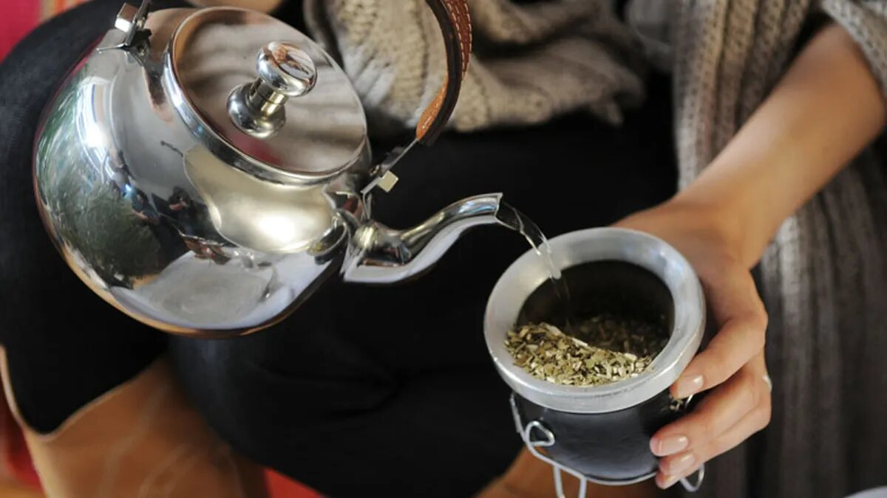

Como cebar un
BUEN
mate?
Si, un
buen
mate.
Home
Campus ITBA
Pasos para cebar un mate
Github

Mate siendo cebado con una pava.
Mejores materos del mundo
El Gauchito Gil
Gazcon
Paso a Paso
Hervir agua 90°C
Colocar la yerba en el mate.
Tapar el mate con la mano y sacar el polvo.
Formar una pared que cubra un 30 a 40% de la circumferencia del mate.
Cebar el agua en el mate con un cierto grado de inclinacion
Tapando la parte de arriba vamos a insertar la bombilla en el mate hasta abajo de todo.
Y por ultimo quemarse vivo con el primer mate a 90°C y acostumbrarse para el termo entero.
Como deberia quedar?
Esto es un mate recien cebado.